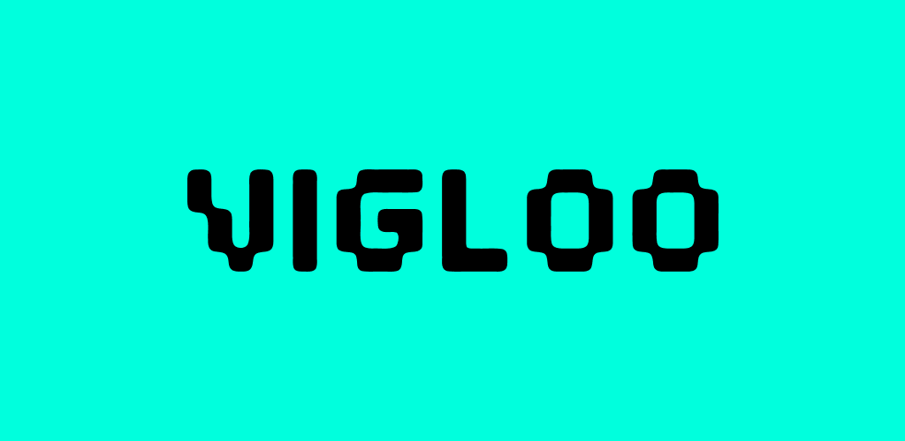

Short-drama viewing & interview — how to take part
Please follow the steps below. If anything is unclear, contact the study coordinator.
Basic setup
- Smartphone / tablet → Watch the content here
- Laptop / tablet → AI interview conversation
- Earphones → Listen to the content
Study flow
Part 1: Rating (Proby)
To measure how engaging the content feels, please open this link first.
https://www.proby.io/interview?t=Jiuh2g5mAfter each episode, the AI interview will follow the order below.
-
Say your score while watching → press Space when the episode ends. Say your rating (−3 to +3) out loud while you watch. When an episode finishes, press Space to move on to the interview.
-
Overall reaction to the episode you just watched. Share your general impressions of that episode in your own words.
-
Where your score shifted a lot. If your rating moved up or down sharply at any point, briefly describe what was happening (scene, plot beat, etc.). If not, you can say there wasn’t a moment like that.
-
Next episode vs another title. If you want to keep watching, continue; if you’d rather not watch more of this title, you may switch to another one.
Part 2: Post-study interview (Proby)
When you have finished the session, use the link below to complete the post-study interview with the AI interviewer. Choose the link that applies to you.
Session steps
From installing apps through viewing and rating, use this order for the full session.
-
Check whether you use short-drama apps (e.g. ReelShort, DramaBox)
Confirm whether you already use apps like ReelShort or DramaBox for short dramas.
ReelShort DramaBox Other short-drama apps -
If you use them, start with something you enjoyed recently
If you already use ReelShort, DramaBox, or similar, and there is a title you enjoyed recently, start watching from that title.
-
Install Vigloo, then watch the three assigned titles
Install the Vigloo app, then watch the three titles below. You can install from the links here or search the App Store / Play Store for «Vigloo» (or the Korean store name «비글루»).

Example: searching and installing from the store - Bloodbound Luna
-
 Everyone Awakens! My Ultimate Build Rule All
Everyone Awakens! My Ultimate Build Rule All
-
 The Last Dragon Tamer
The Last Dragon Tamer
-
Say your rating out loud while watching
While you watch, say whichever score on the scale fits how you feel—for example, “Right now it’s a 1” or “This scene is a minus 1.”
−3 −1 0 +1 +3- −3
- Extremely not interesting
- −1
- Not interesting
- 0
- Neutral
- +1
- Interesting
- +3
- Extremely interesting
+2 / −2 are intentionally not on the scale. Use +3 when something is extremely interesting, and −3 when it is extremely not interesting.
-
When an episode ends, press Space to continue the interview
When playback of an episode ends, press Space as instructed to move to the interview step.
Space Continue to interview -
You may switch to another title if you prefer
Even for assigned titles, if you no longer want to watch, you may move to another title—please go at a comfortable pace.